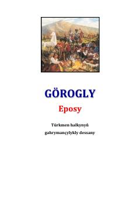

GEGo'rog'li dostoni bo'yicha ilmiy-tanqidiy tahlillar va qiyosiy tadqiqotlar to'plami.
Ushbu kitob turkman xalqining mashhur qahramonlik eposi bo'lgan 'Go'rog'li' dostoni haqidagi ilmiy-tanqidiy mulohazalar va tahlillarni o'z ichiga oladi. Muallif dostonning turli variantlarini, tarixiy asoslarini va undagi mifologik hamda diniy elementlarni boshqa turkiy dostonlar bilan qiyosiy o'rganadi.